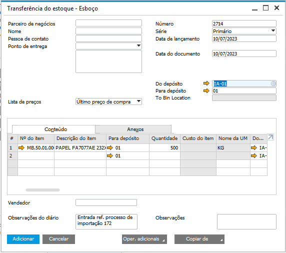

Recebimento de Mercadorias
Após a chegada de mercadoria na empresa, é necessário efetuar o seu recebimento para que a mercadoria agora seja contabilizada no estoque da empresa. Desta forma, no processo, é necessário clicar no botão Recebimento de mercadorias, e então será aberta a tela Assistente - Recebimento de mercadorias.
Na tela Assistente - Recebimento de mercadorias, será exibida a NF de Nacionalização ou a NF de Transporte, se houver, a grid superior será a referência dos documentos de recebimento e a grid inferior irá mostrar os itens do processo, as quantidades esperadas e as quantidades recebidas.
Para criar um recebimento, selecione qual NF que deseja realizar o processo e clique em Gerar.

A tela Depósito de destino será aberta e deve ser escolhido o depósito para onde vai ser transferido o estoque.

Será criado um esboço de Transferência do estoque com os itens, depósitos e quantidades vindos da NF Transporte ou NF Nacionalização.
{kind=link}
Na aba Conteúdo apenas a coluna Para depósito estará habilitada para edição. Se o usuário clicar em uma coluna que não esteja habilitada, a seguinte mensagem será exibida:
BR One :: Valor não pode ser alterado na geração do Recebimento de mercadoria (Importação).
Após adicionar o esboço, a transferência realizada poderá ser visualizada na tela de detalhes, através do botão […].

Na parte superior da tela irá mostrar os documentos vinculados dos itens já recebidos, caso o item recebido seja de estoque mostrará o documento de transferência de estoque e caso não estocável mostrará o documento de nacionalização ou NF de transporte.
Já na parte inferior da tela irá exibir os itens do processo de importação, uma flag identificando se o item é estocável e as colunas referente as quantidades onde mostra a quantidade total do item no processo e a quantidade recebida.
Para cancelar um esboço, basta selecionar a linha do esboço e clicar em Cancelar esboço. Caso não seja selecionada nenhuma linha, a seguinte mensagem será exibida:

BR One :: Selecione ao menos uma linha para realizar o cancelamento dos esboços.
Caso seja selecionada uma linha que não é esboço, a seguinte mensagem será exibida:

BR One :: As linhas selecionadas para cancelamento [x] não são documentos do tipo esboço.
Possíveis ocorrências durante o processo
Antes de criar o Recebimento de Mercadorias, é necessário inserir os itens do pedido de compra. Caso os itens não tenham sido inseridos e o usuário clique no botão Recebimento de mercadorias, a seguinte mensagem será exibida:
{kind=link}
BR One :: Antes de gerar o Recebimento Mercadorias é necessário inserir os itens.
O Recebimento de Mercadorias deve ser criado após a NF Nacionalização. Caso ela não tenha sido criada e o usuário clique em Recebimento de mercadorias, a seguinte mensagem será exibida:
{kind=link}
BR One :: Realize o processo de “NF Nacionalização” antes de realizar este processo.